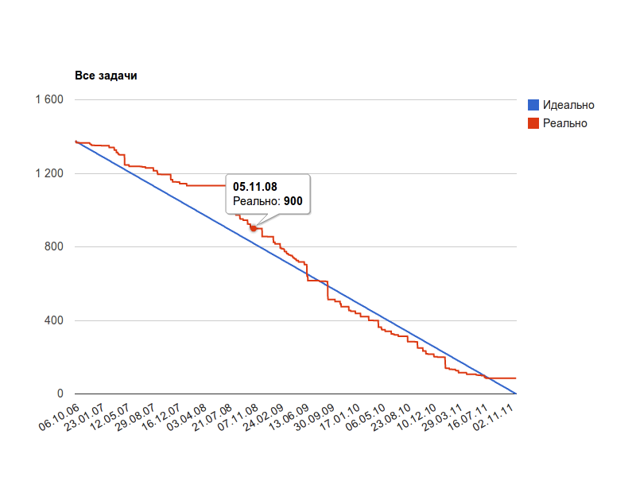
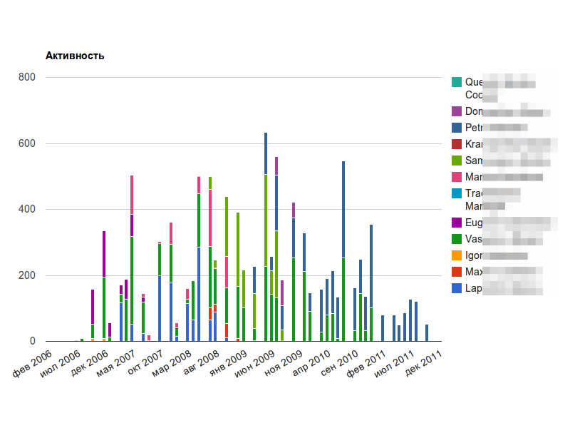
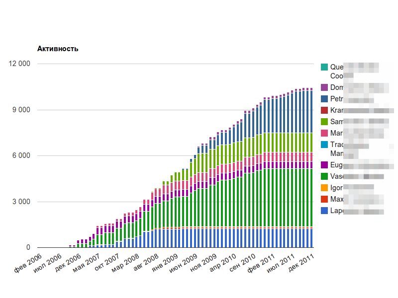
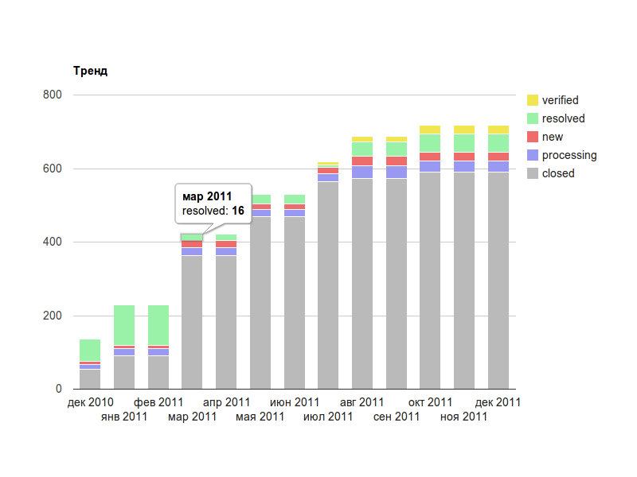
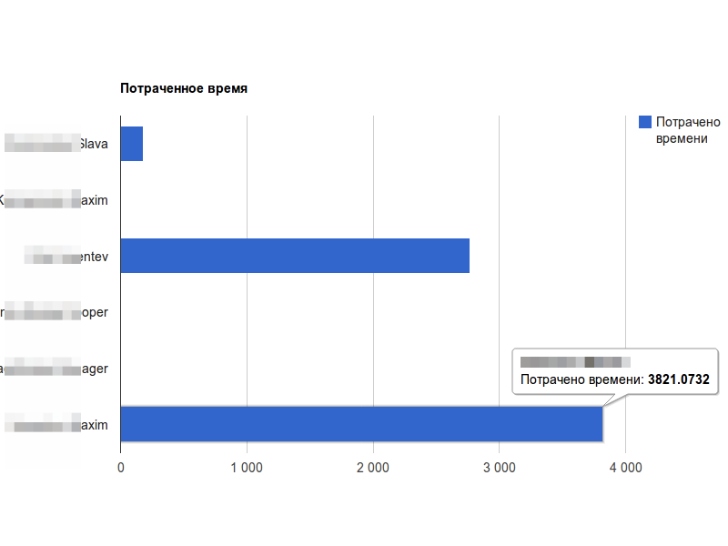
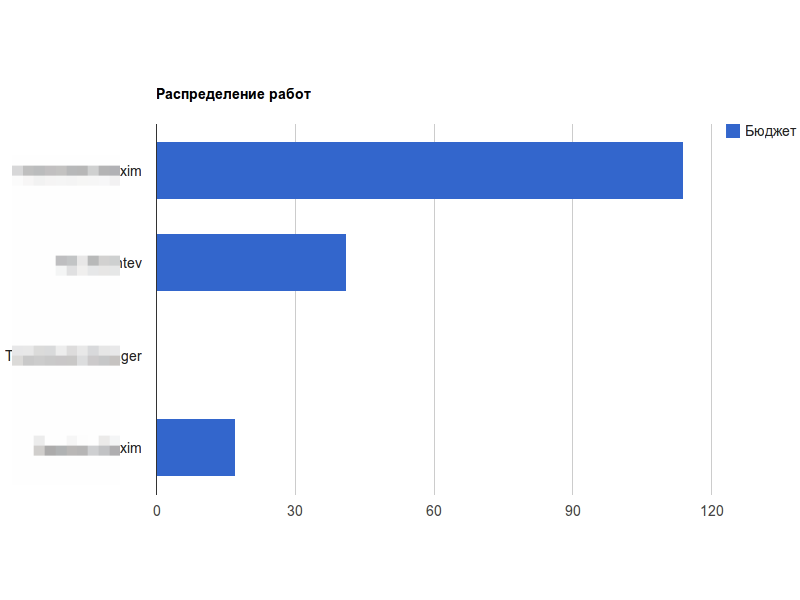
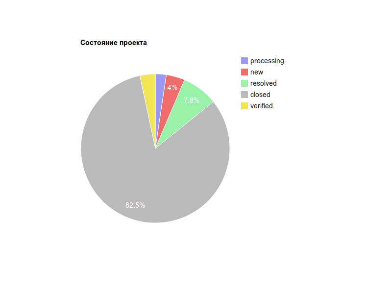
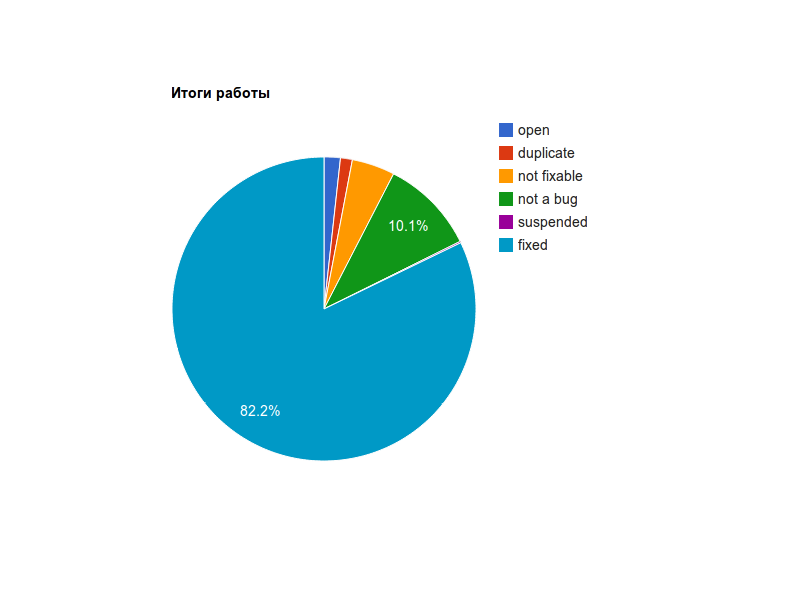

|
<< Click to Display Table of Contents >> Navigation: Rus > Руководство разработчика > Как писать скрипты и триггеры в TrackStudio > Как сделать свой Dashboard > Как построить графики на Dashboard |
Начиная с версии 4.0.15 вы можете использовать макросы для построения графиков и диаграмм в описании задач, операциях и дополнительных полях типа Текст.
Графики строятся с помощью Google Visualization API. Для их тонкой настройки вы можете использовать все параметры графиков, описанные в документации к этому API.
К сожалению, для работы графиков требуется соединение с Интернет на клиентских машинах. Также в файле trackstudio.default.properties необходимо прописать
trackstudio.nogoogle=false
Впрочем, библиотеки кешируются браузером на 1 час и грузятся только по мере необходимости.
Вы можете построить 8 типов графиков, при этом вам не нужно подготавливать для них данные: просто укажите номер задачи, с которой будет вестись отсчет, название макроса, название фильтра для задач (таким образом вы можете включать в график только требуемые данные) и, при желании, параметры отображения.
Структура макроса: #<номер задачи>{<название макроса>:<Название фильтра><, (опции)>}
Опции указываются в круглых скобках.
burndownchart
Графическое представление оставшейся работы по проекту с течением времени. Для проекта должен быть установлен бюджет и дедлайн. График показывает оставшуюся работу в часах. Если для задачи указывается бюджет, то учитывается его значение, если только потраченное время - учитывается оно. Бюджет и потраченное время пересчитываются в часы в соответствии с настройками TrackStudio.
Код макроса:
#20323{burndownchart:All,('title':'Все задачи', 'width': 900, 'height': 600, 'backgroundColor': 'transparent')}

personalactivitychart
Диаграмма интенсивности работы команды над проектом. Для диаграммы подсчитывается количество часов, затраченных каждым участником в месяц.
Код макроса:
#20323{personalactivitychart:All,('title':'Активность', 'width': 900, 'height': 600, 'backgroundColor': 'transparent', 'seriesType': 'bars', 'isStacked': true)}

teamactivitychart
График отображает рост потраченного на проект времени.
Код макроса:
#20323{teamactivitychart:All,('title':'Активность', 'width': 900, 'height': 600, 'backgroundColor': 'transparent', 'seriesType': 'bars', 'isStacked': true)}

trendchart
Тренд позволяет оценить, как изменялось количество новых, открытых, закрытых задач за последнее время. В отчете подсчитывается количество задач в разных состояниях за период времени.
Код макроса:
#20323{trendchart:Last Year,('title':'Тренд', 'width': 900, 'height': 600, 'backgroundColor': 'transparent')}

spenttimechart
На диаграмме отчета о затраченном времени вы можете увидеть, сколько часов проработал конкретный участник проекта за время, указанное в используемом фильтре.
Код макроса:
#20323{spenttimechart:Last Year,('title':'Потрачено времени', 'width': 900, 'height': 600, 'backgroundColor': 'transparent')}

workloadchart
Диаграмма показывает распределение задач по команде с учетом планируемых затрат. В задачах проекта должно быть заполнено поле "Бюджет".
Код макроса:
#20323{workloadchart:All,('title':'Распределение работ', 'width': 900, 'height': 600, 'backgroundColor': 'transparent')}

statechart
Диаграмма показывает распределение задач проекта по состояниям.
Код макроса:
#20323{statechart:Last Year,('title':'Состояние проекта', 'width': 400, 'height': 400, 'backgroundColor': 'transparent')}

resolutionchart
Диаграмма показывает распределение задач проекта по резолюциям.
Код макроса:
#20323{resolutionchart:Last Year,('title':'Итоги работы', 'width': 400, 'height': 400, 'backgroundColor': 'transparent')}

Параметры диаграмм, указываемые в макросах, полностью соответствуют синтаксису опций графиков в Google Visualisation API. Названия параметров следует указывать в одинарных кавычках, а значения - в зависимости от типа параметра. Параметры обязательно указываются в круглых скобках (внутри которых могут быть фигурные скобки).
Некоторые важные параметры:
Параметр |
тип |
значение по умолчанию |
Описание |
title |
строковое |
|
Заголовок графика |
height |
число |
высота элемента-контейнера |
Высота диаграммы |
width |
число |
ширина элемента-контейнера |
Ширина диаграммы |
backgroundColor |
строка |
'white' |
Цвет фона диаграммы. Можно указывать цвета в формате HTML: 'red' или '#FF0000', например |
backgroundColor |
строка |
'white' |
Цвет фона диаграммы. Можно указывать цвета в формате HTML: 'red' или '#FF0000', например |
Подробнее о параметрах графиков можно прочитать в документации к Google Visualization API.
Burn Down Chart — LineChart
График интенсивности работ по месяцам, Интегральный график работ — ComboChart
Тренд — ColumnChart
Отчет о проделанной работе, Распределение нагрузки — BarChart
Текущее состояние проекта, Итоги работы над задачами — PieChart